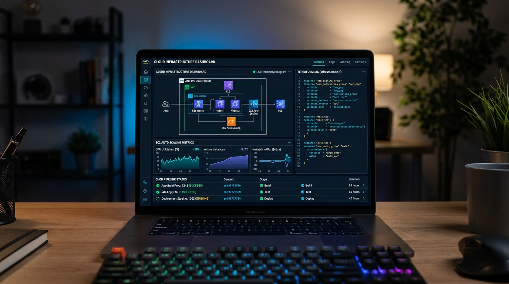

AWS Autoscaling & High-Availability IaC
Designed and provisioned a highly available, auto-scaling AWS infrastructure strictly using Terraform. Configured Application Load Balancers, Multi-AZ Auto Scaling groups, custom VPC subnets, and cloud monitoring following IaC industry best practices.